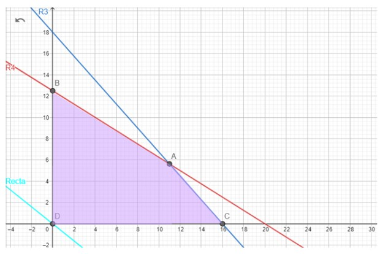

Los estudiantes comprenderán que la ciudadanía mundial
y la cultura de paz exigen el repeto y la práctica
de los derechos humanos ,la justicia social,la diversidad
la igualdad entre todos los seres humanos ,la sostenibilidada
ambiental en función de promover un mundo y un futuro mejor para todos.
Programación lineal
Historia
El problema de la resolución de un sistema lineal de inecuaciones se remonta, al
menos, a Joseph Fourier, después de quien nace el método de eliminación de Fourier-
Motzkin. La programación lineal se plantea como un modelo matemático desarrollado
durante la Segunda Guerra Mundial para planificar los gastos y los retornos, a fin de
reducir los costos al ejército y aumentar las pérdidas del enemigo. Se mantuvo en
secreto hasta 1947. En la posguerra, muchas industrias lo usaron en su planificación diaria.

Objetivo de la programación lineal
El objetivo de la programación lineal es calcular el valor de las variables de una función
que maximizan o minimizan esta. Para ello se parte de un conjunto de ecuaciones o
inecuaciones, (restricciones), que limitan los valores que puede tener cada variable.
¿Qué es la programación lineal
Es el campo de la programación matemática dedicado a maximizar o minimizar (optimizar)
una función lineal,denominada función objetivo, de tal forma que las variables de dicha
función estén sujetas a una serie de restricciones expresadas mediante un sistema de
ecuaciones o inecuaciones también lineales.
El método tradicionalmente usado para resolver problemas de programación lineal es el Método Simplex.
Aplicaciones
*Optimización de la combinación de cifras comerciales en una red lineal de distribución de agua.
*Aprovechamiento óptimo de los recursos de una cuenca hidrográfica, para un año con afluencias
caracterizadas por corresponder a una determinada frecuencia.
*Soporte para toma de decisión en tiempo real, para operación de un sistema de obras hidráulicas
*Solución de problemas de transporte.
Ejercicio Resuelto
1) Un estudiante de administración de empresas del Nowledge College necesita completar un
total de 65 cursos para graduarse. El número de cursos de administración tendrá que ser
mayor que o igual a 23. El número de cursos ajenos al área de administración deberá ser
mayor que o igual a 20. El curso de administración promedio requiere un libro de texto
que cuesta $60 e implica 120 horas de estudio. Los cursos ajenos al área de administración
requieren un libro de texto que cuesta $24 e implican 200 horas de estudio. El estudiante
dispone de un presupuesto de $3,000 para libros.
X = Cursos de Administración que cursará el estudiante
Y = Cursos ajenos al área de Administración que cursará el estudiante
Función Objetivo:
Min (120X + 200 Y)
Restricciones:
Cursos Necesarios para graduarse: X + Y = 65
Cantidad de Cursos de Administración: X ≥ 23
Cantidad de Cursos ajenos a Administración: Y ≥ 20
Presupuesto del estudiante: 60X + 24Y ≤ 300
La solución visual se encontraría en el punto E:
X = 40 Y = 25
Con los valores obtenidos de X = 40, Y = 25, se minimizará las horas de estudio,
teniendo como resultado 9800 horas.
Se tiene las variables de superávit para las restricciones respecto a la cantidad de
cursos de administración (s1) y cursos ajenos a la administración (s2).
s1 = 40 – 23 = 17
s2 = 25 – 20 = 5